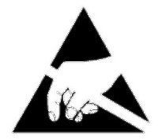
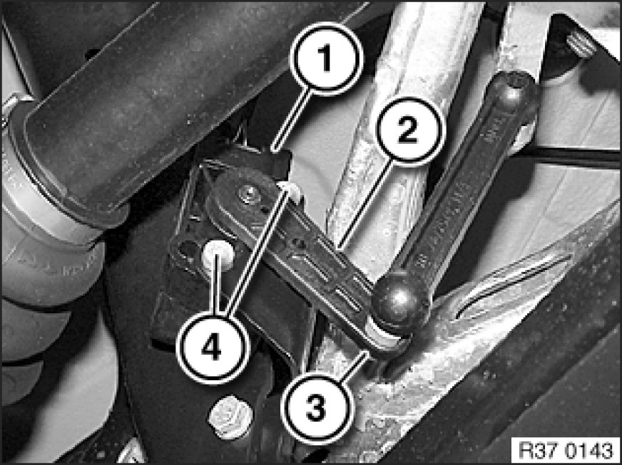

Replacing Rear Ride-Height Sensor
37 14 512 - Replacing rear ride-height sensor

Important!
Read and comply with notes on protection against electrostatic damage (ESD protection) 61 35 ... Notes on ESD Protection (Electro Static Discharge).

Disconnect plug connection (1).
Release nut (3) and disconnect jointed rod.
Tightening torque 37 14 7AZ [1][2]Specifications.
Release screws (4) and remove ride-height sensor.
Installation Note:
Sensor lever (2) must point from ride-height sensor to right rear wheel.
Tightening torque 37 14 6AZ [1][2]Specifications.

After installation:
- Check headlight adjustment Adjusting Headlights, correct if necessary